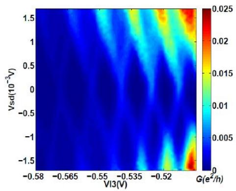

物理图像与定义
库仑菱形（Coulomb diamond）是单半导体量子点在源漏偏压 –栅压 平面上扫描电流（或微分电导 ）时出现的特征图样：一个个关于 对称的菱形无电流区沿栅压轴周期性排列，相邻菱形在 处相接于一点。菱形内部量子点处于库仑阻塞区，电子数 固定、顺序隧穿被禁止；菱形之外阻塞解除，出现输运电流。把零偏压处的水平截线单独拉出来，就得到库仑振荡曲线——每个电流峰恰好对应相邻两个菱形的连接点。
这张图的每一条几何特征都对应一个物理事件：菱形的边对应某个电荷态的电化学势 与源极或漏极费米面对齐；菱形沿偏压方向的顶点对应偏压窗口 首次超过加电子能；菱形之外与边平行的附加线对应轨道或自旋激发态进入偏压窗口。因此库仑菱形被称为单量子点的”参数提取器”——充电能、总电容、各电极耦合电容、杠杆臂与激发态间距都可以从同一张图上读出。

源漏偏压非对称时量子点输运与典型库仑菱形图
理论模型与边界方程
定量描述基于常相互作用模型（CI 模型）：点内全部库仑相互作用压缩为总电容 ，单粒子能级与填充数无关。取漏极接地（）、源极加偏压 ，含 个电子的量子点电化学势为
其中 为充电能。菱形边界就是”某条电化学势恰好与某个电极费米面简并”的等值线，两类边界分别给出两组斜率：
- 与漏极对齐（）：要求 ，故
- 与源极对齐（）：把 （电子能量随电极电压反号移动）代入 并整理，得
两组斜率一正一负，正是菱形倾斜边的来源；正斜率边对应量子点与源极之间的隧穿、负斜率边对应与漏极之间的隧穿（正负归属随偏压施加在哪一侧的约定而互换）。由于 对 的斜率为 、对 的斜率为 ，源、漏、栅三个方向”电压–能量”转换效率的差异全部来自电容分压，这是菱形几何的微观根源。
顶点、高度与宽度
沿偏压轴方向，菱形顶点对应 与 同时进入偏压窗口的临界条件，即偏压窗口刚好覆盖一个加电子能：
多电子区 时顶点电压直接给出充电能 ，即菱形半高；越过顶点后任何栅压下都有能级留在窗口内，阻塞彻底解除、电流不再归零。少电子区相邻菱形的高度按 与 交替变化，本身就是加电子谱（addition spectrum）的直接成像。
沿栅压方向，菱形宽度 对应填充一个电子所需的栅压改变，给出栅–点电容
进而由 得总电容 。两个方向的尺寸并非独立：栅极杠杆臂 把宽度与高度联系起来，。
杠杆臂的三种求法
杠杆臂（lever arm） 是从栅压换算能量的核心系数，库仑菱形提供三种相互校验的提取路径：
- 斜率法：由上两式直接可得
其中 、 为菱形两条边的斜率绝对值；进一步结合 还可反解出 与 ；
-
几何法：，即菱形半高电压除以宽度电压，零偏压测量中亦可直接用 标定；
-
电容比法：测得某电极电容与总电容后直接取 ，例如实测 、 得 。
三种方法在实验上应相互一致；若斜率法与几何法偏差明显，往往提示栅压在扫描范围内改变了点的形状（电容随栅压漂移）或存在未被计入的交叉电容。
菱形之外的激发态谱
偏压窗口进一步增大时， 电子态的轨道或自旋激发态进入窗口，电子可经基态或激发态两条路径隧穿，在菱形外出现与边界平行的电导细线；这些线在偏压方向上的间距经杠杆臂换算后给出激发态相对基态的能级间距 。因此库仑菱形不仅是阻塞相图，更是一台原位能谱仪——这一用法也常被称为非线性输运谱学或激发态谱学。当 与 同时落入窗口，两个电子可同时参与输运，电流出现台阶式跃增。
菱形内部的残留输运与边界展宽
理想 CI 模型预言菱形内部电流严格为零、边界为锐利直线，实际测量中两者都会被软化：
- 共隧穿（cotunneling）：阻塞禁止的只是最低阶顺序隧穿，电子仍可经虚占据中间态一次性穿过量子点，在菱形内部留下弱而有限的背景电流；
- 热展宽：边界本质上是被费米–狄拉克分布抹开的简并线，宽度 ，电子温度 越高边越模糊；这也是用库仑峰或菱形边反推电子温度的依据；
- 隧穿展宽：势垒过开时 不可忽略，能级本身被展宽，菱形角变圆、顶点不再锐利。
因此”菱形高度=“这类读数总是相对测量分辨率而言的，边界质量本身就是器件状态的诊断量。
参数与量级
| 量 | 典型值 | 来源 |
|---|---|---|
| 总电容 | （浅刻蚀 GaAs 单点实测） | |
| 充电能 | （同器件，） | |
| 栅–点电容 | ， | |
| 杠杆臂 | –（GaAs，不同电极与器件） | |
| 杠杆臂参考值 | plunger gate ，barrier gate （GaAs） | |
| 充电能 | –（锗硅纳米线空穴点，腔读出） | |
| 杠杆臂 | –（同器件，纳米线点更小） | |
| 隧穿展宽 | ， | |
| 交流激励 | 、（锁相 SR830） |
实验特征与测量
标准测量方案。 在源极叠加直流偏压 与微伏量级交流激励（如锁相放大器 SR830 输出的 、几十 Hz 信号），固定 扫描 测 ，再步进 重复，得到以 、 为自变量的微分电导图。实验流程上通常先程序设定一个 扫一条 – 曲线，再逐点步进 拼出整张菱形图。
边界质量的判读。 清晰锐利的菱形边界要求 （稀释制冷机电子温度）且两侧势垒满足 ；若势垒过开（隧穿耦合过强）、温度过高或电荷噪声较强，边界会展宽、模糊乃至消失。由菱形换算能量时必须明确偏压施加方式与杠杆臂——直接把横向宽度当作充电能是常见错误。
磁场下的菱形。 外加垂直磁场后，菱形内基态与激发态线发生塞曼劈裂（Zeeman splitting），劈裂模式直接泄露点内载流子数的奇偶：奇数空穴时基态劈裂为自旋向上、向下两条线；偶数空穴时基态不劈裂、仅三重激发态劈裂。在 – 范围沿菱形边缘逐点测量劈裂间距 ，按 （ 为玻尔磁子）线性拟合即可提取朗德 g 因子——库仑菱形由此成为自旋态识别与 g 因子测量的载体。
非直流读出菱形。 菱形边界同样可以不经源漏电流获得：把射频反射测量的网络分析仪定频扫功率信号与直流输运同步扫描，可得到与传统输运一致的库仑菱形；将量子点与微波谐振腔耦合后，固定探测频率于腔的谐振点，腔的幅值与相位信号也能完整复现菱形图，且在直流信号微弱到无法辨认的区域依然清晰——这是色散读出思想在输运谱学中的体现。
与其他概念的关系
- 库仑阻塞是菱形的物理内核：菱形内部即阻塞区，菱形图是阻塞条件在 – 平面上的完整相图。
- 常相互作用模型给出菱形边界方程、斜率与尺寸的定量预言；充电能 决定菱形高度，电化学势对齐条件决定边界位置。
- 单点用库仑菱形，双量子点则扫描两个栅压得到电荷稳定图的蜂窝结构与偏压三角形；二者都是电化学势对齐条件在不同参数平面上的切片。阻塞区电子数严格为整数的性质，也是QPC 电荷传感逐个数电子、标定绝对电子数的基础。
- 强微波驱动下，阻塞区还会出现光子辅助隧穿边带，在菱形图内叠加与边平行的光子复制线。
参考文献
- 库仑菱形提取充电能、杠杆臂与激发谱的实验规范：van der Wiel et al., RMP 74, 801 (2002)、Zwanenburg et al., RMP 85, 961 (2013)。
完整文献库（含各篇站内全文页）见 参考文献库。